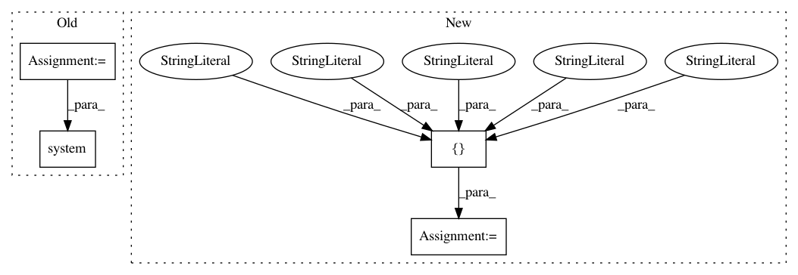

e0c9d018aca7bf05486c385484d5ed1c37bac423,pynets/diffconnectometry.py,,coreg_WM_mask_to_diff,#Any#Any#,151
Before Change
flirt.inputs.apply_xfm = True
flirt.run()
args = "-bin"
maths = fsl.ImageMaths(in_file=out_file, op_string=args, out_file=out_file)
print("\nBinarizing WM mask...")
os.system(maths.cmdline)
return out_file
def coreg_mask_to_diff(dwi_dir, mask):
After Change
out_file = "%s%s" % (dwi_dir, "/wm_mask_diff.nii.gz")
wm_transforms_wf = pe.Workflow(name="wm_transforms")
inputnode = pe.Node(niu.IdentityInterface(fields=["dwi_infile", "wm_mask_loc", "out_file", "mat_file", "dwi_dir"]),
name="inputnode")
inputnode.inputs.dwi_infile = dwi_infile
inputnode.inputs.wm_mask_loc = wm_mask_loc
inputnode.inputs.out_file = out_file
inputnode.inputs.mat_file = "%s%s" % (dwi_dir, "/xfms/MNI2diff.mat")
In pattern: SUPERPATTERN
Frequency: 3
Non-data size: 4
Instances
Project Name: dPys/PyNets
Commit Name: e0c9d018aca7bf05486c385484d5ed1c37bac423
Time: 2018-10-13
Author: dpisner@utexas.edu
File Name: pynets/diffconnectometry.py
Class Name:
Method Name: coreg_WM_mask_to_diff
Project Name: geek-ai/MAgent
Commit Name: d8c667fc32b7c93b6dc832a8f3de95dab8dac701
Time: 2017-11-30
Author: zhenglianmin96@163.com
File Name: scripts/test/test_examples.py
Class Name:
Method Name:
Project Name: dPys/PyNets
Commit Name: e0c9d018aca7bf05486c385484d5ed1c37bac423
Time: 2018-10-13
Author: dpisner@utexas.edu
File Name: pynets/diffconnectometry.py
Class Name:
Method Name: coreg_mask_to_diff